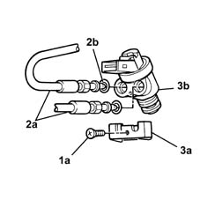
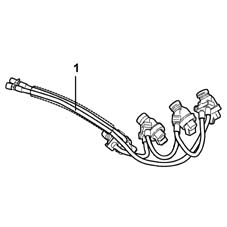

1057B68 gpl injector unit with connection pipes to pressure regulator dismantle and rebuild at bench
- Path
- Procedures > 10 ENGINE UNIT > 1057 LPG FUEL SYSTEM. > 1057B gpl multipoint injection fuel system > 1057B68 gpl injector unit with connection pipes to pressure regulator dismantle and rebuild at bench
- Kind
- repair procedure (removal / refitting; the operation number is the code)
- Applies to
- engines: 1.6 16v; all production periods; only with equipment: GPOWER
- Interactive page
- https://sloeber94.github.io/elrnDB-fMltpl/en/#/2891515
Applies to: engines: 1.6 16v; all production periods; only with equipment: GPOWER and Euro 3
 Dismantling
Dismantling
 Reassembling
Reassembling1. Undo bolts (1a) securing the pipe retaining plate.
2. Undo LPG delivery and return pipes (2a) and recover sealing rings (2b).
3. Withdraw plate (3a) from injector (3b).
Carry out the same operation on all the injectors.

Applies to: engines: 1.6 16v; all production periods; only with equipment: GPOWER and Euro 3
Reassembling
Dismantling1. Push the pipes fully home on the injector, then fit the retaining plate. Check the plate adheres to the injector body over its entire area.
Tighten the pipe nuts to the injectors.
Tighten the pipe retaining plate bolt.
Carry out the same operation for all the injectors.
